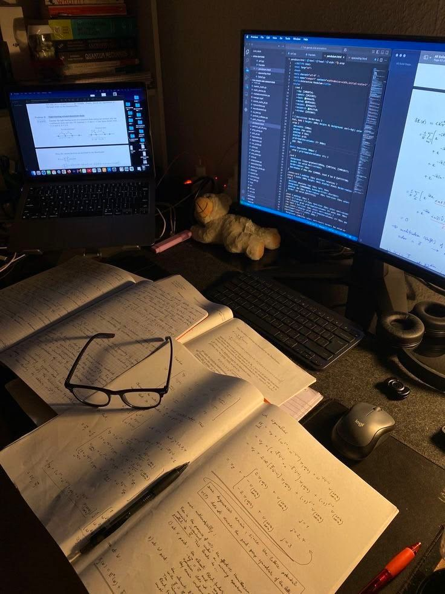

Why I chose ICT
Most of the men in my family work as software engineers or in the IT sector, but I have fewer women in my family who work in this field. This inspired me to explore ICT and the opportunities it offers. I had some programming experience before joining HZ, which made me interested in learning more about how software is created. I chose ICT because I enjoy problem-solving and want to develop my technical skills through practical assignments and projects. HZ suits me because I prefer learning by doing and applying what I learn to real tasks. During my studies, I want to become more confident in programming, gain experience working with others, and prepare for a future career in software engineering. In the long term, I hope to keep learning about new technologies and build useful applications.
- I enjoy figuring out problems and finding solutions.
- I try to keep going even when something doesn't work the first time.
- I like using logic to understand how things work.
